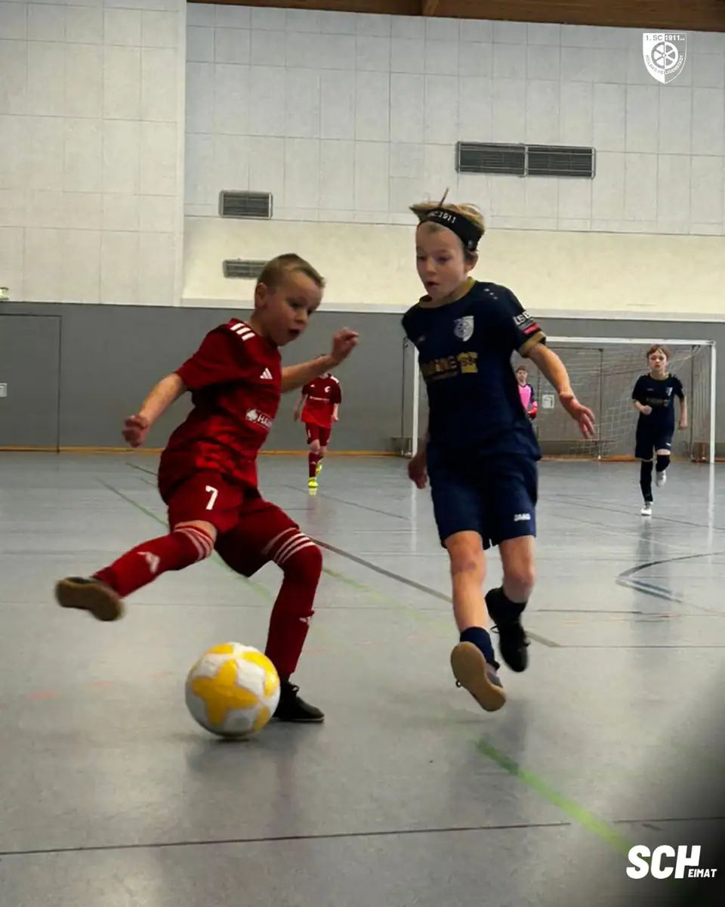
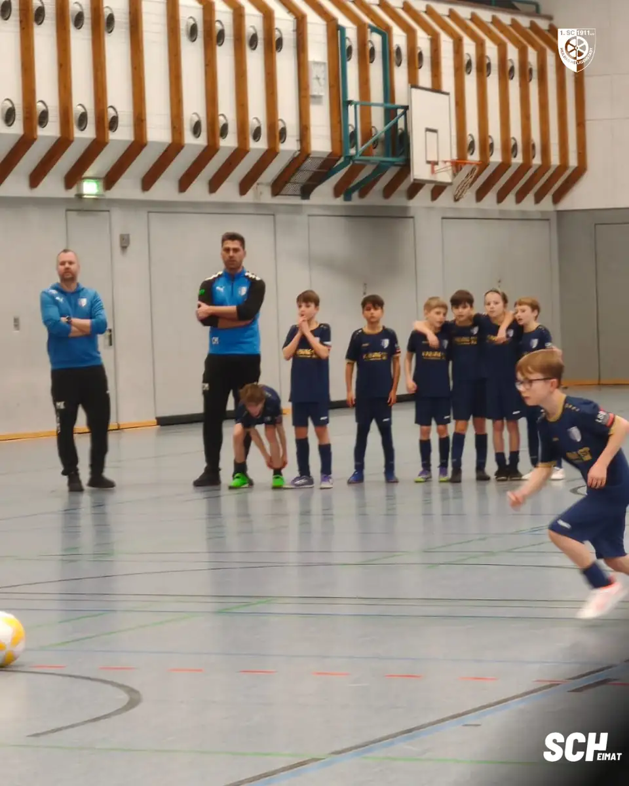
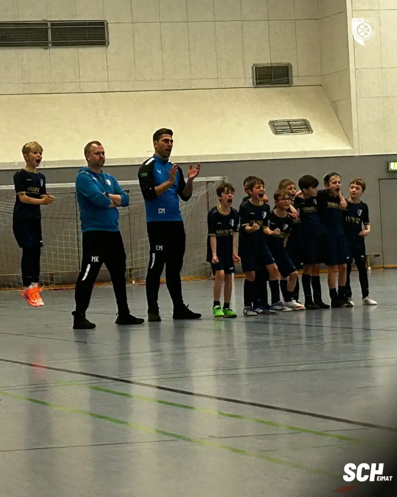
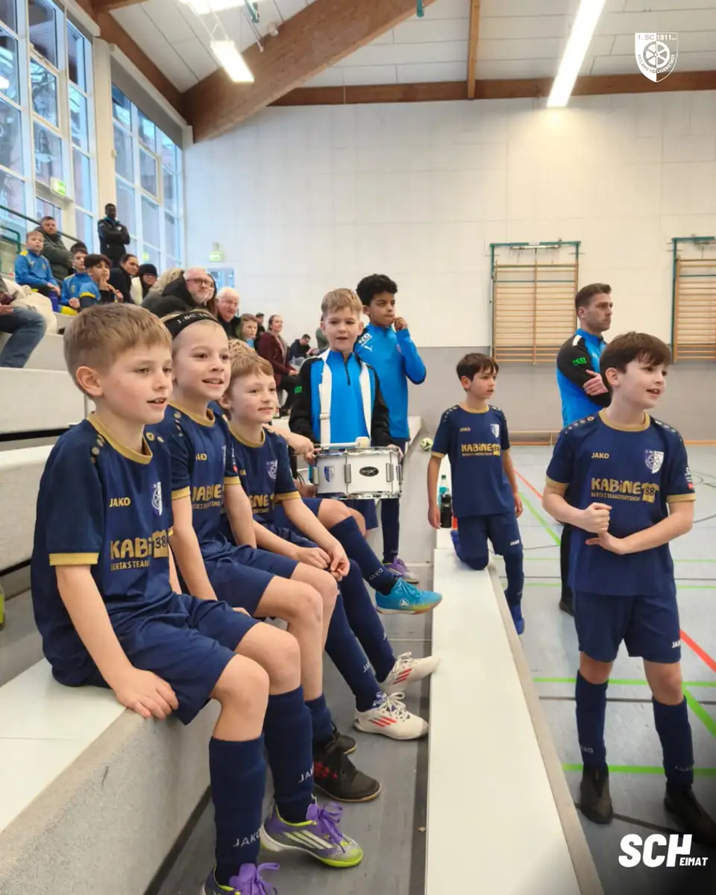
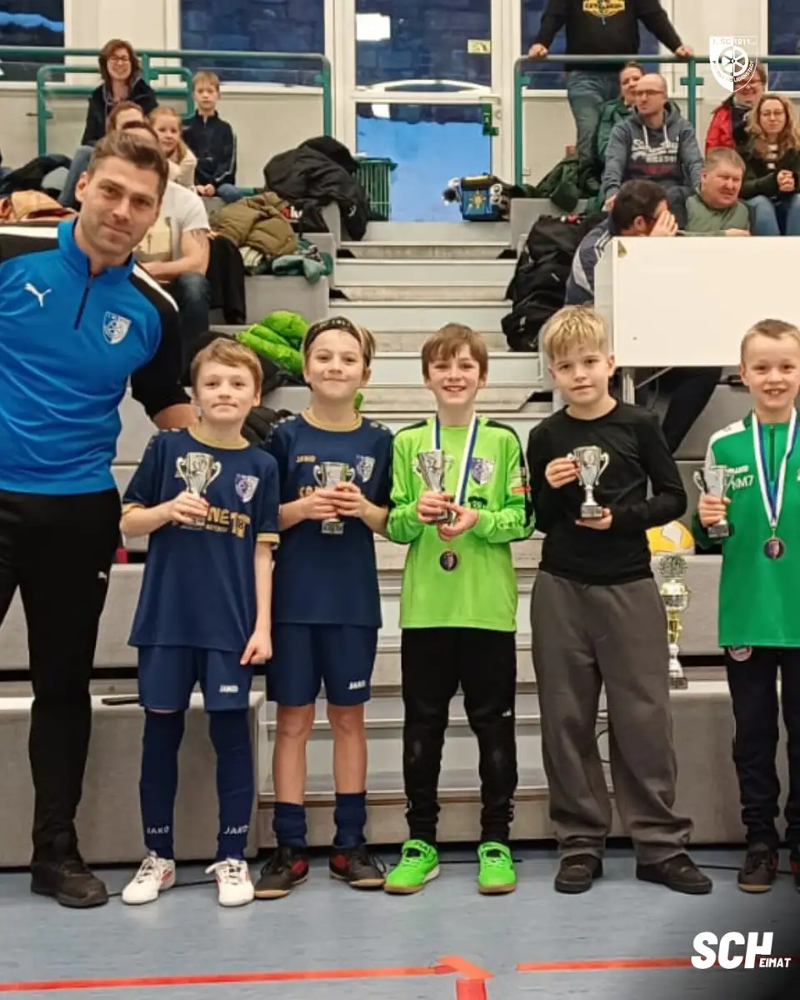
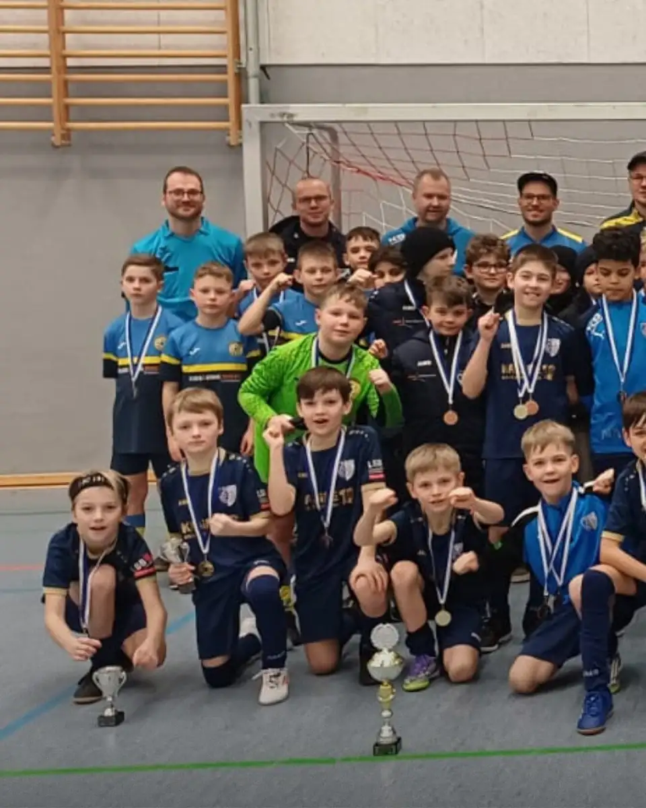
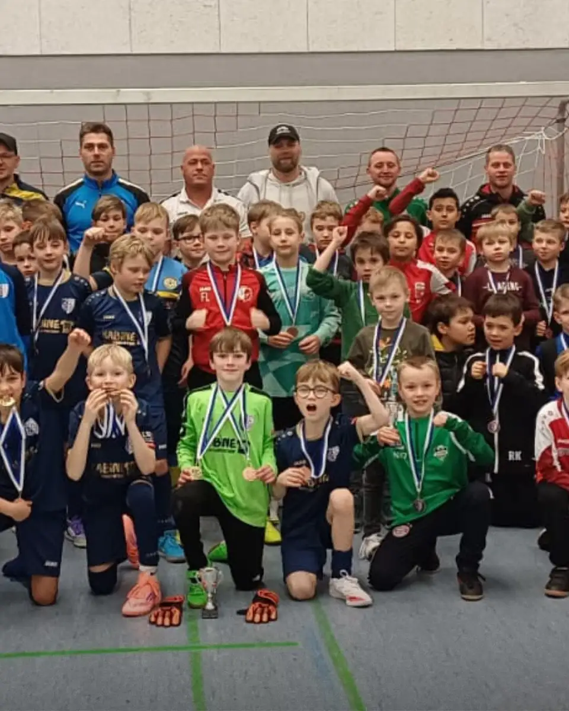
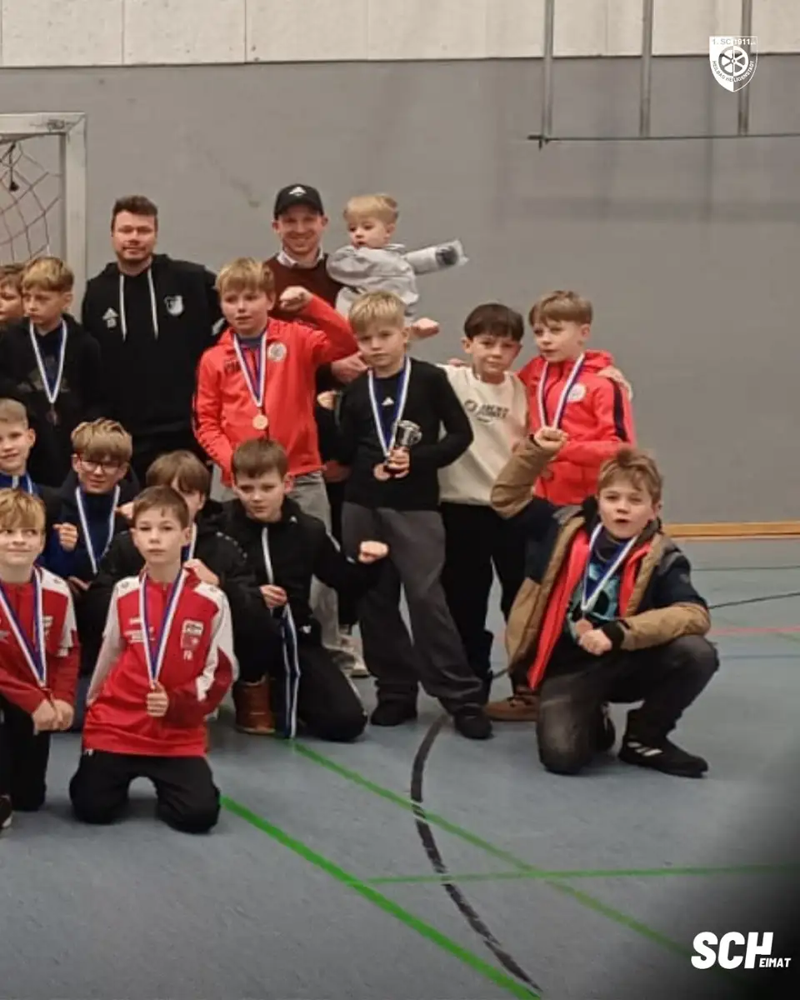

U10 beendet Hallensaison mit einem starken Mammut-Wochenende
Unsere U10 hat am Wochenende eindrucksvoll gezeigt, was in ihr steckt. Zwei Turniere an zwei Tagen – und unzählige Momente voller Einsatz, Teamgeist und Spielfreude. Ein echtes Mammut-Wochenende, das in Erinnerung bleiben wird.
Samstag: Ensyte Cup in Schlotheim
Bereits früh am Morgen machte sich das Team von Trainer Christian Müller auf den Weg nach Schlotheim zum Ensyte Cup des SV 49 Körner. In einem stark besetzten Teilnehmerfeld überzeugten die Jungs auf ganzer Linie: technisch sauber, mutig im Spiel nach vorn und geschlossen als Mannschaft. Ohne Punktverlust sicherten sie sich verdient den Turniersieg – ein Auftritt, der Lust auf mehr machte.
Sonntag: Heimturnier mit zwei Teams
Am Sonntag folgte das eigene Hallenturnier – und der SCH ging gleich mit zwei Mannschaften an den Start. Nach einer etwas durchwachsenen Vorrunde steigerten sich beide Teams deutlich. In den K.-o.-Spielen zeigten sie Charakter, Mut und spielerische Klasse.
Starke Platzierungen und ein packendes Finale
Team Heiligenstadt B musste sich im Neunmeterschießen geschlagen geben, belegte am Ende aber einen starken 6. Platz. Team Heiligenstadt A wuchs im Finale noch einmal über sich hinaus, spielte den technisch reiferen Fußball und gewann ein spannendes Endspiel mit 2:1 gegen Sondershausen.
Ein besonderes Highlight: Allstarteam
Emilian Thüne – Bester Torwart
Benedikt Müller – Bester defensiver Spieler
Jannis Gerlach – Bester Angreifer
Damit stellte der SC 1911 Heiligenstadt gleich drei von fünf Allstar-Spielern – ein starkes Zeichen für die Qualität der Mannschaft.
Stolzer Abschluss, klarer Blick nach vorn
Ein großes Lob an alle Spieler für Einsatz, Leidenschaft und Zusammenhalt – und an das Trainerteam für die tolle Entwicklung. Mit diesen Erfolgen verabschiedet sich die U10 aus der Hallensaison. Jetzt richtet sich der volle Fokus auf die Vorbereitung der Rückrunde.
Mannschaften am Wochenende
Samstag:
Thüne – B. Müller – L. Müller – Drössler – Gerlach – Fasshauer – S. Müller
Sonntag
Team Heiligenstadt A:
Thüne – B. Müller – Lippold – Konradi – Gerlach – Fasshauer – Dioum Oliver
Team Heiligenstadt B:
Konradi – Huschenbett – Periello – L. Müller – Grieß – Hildebrand – Schmerbauch – Thüne







